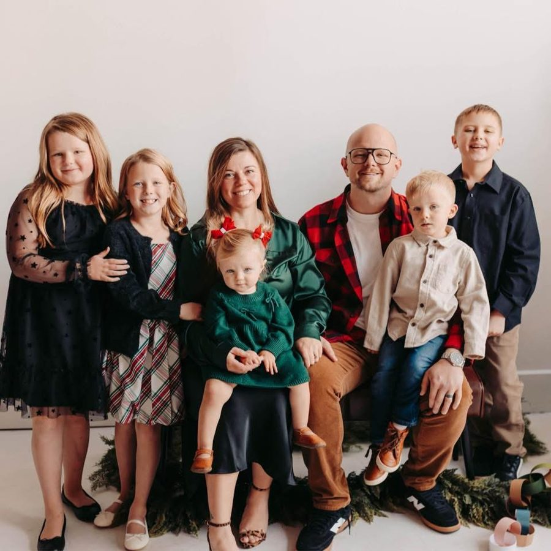

Pastor Moose
Timothy “Moose” Kavanagh · Founding Senior Pastor
Moose has spent more than thirteen years in the trenches with people — walking alongside men, women and teenagers as God rebuilds their lives. Formation grew out of that work: nine people in a living room with an open Bible in July 2025.
He preaches verse by verse, loves digging into the original words, and keeps it plain enough that anybody can follow. He's pursuing a master's in ministry at Lincoln Christian Seminary.
Moose and his wife Ashlie have five kids. Come on a Sunday and you'll meet the whole crew.